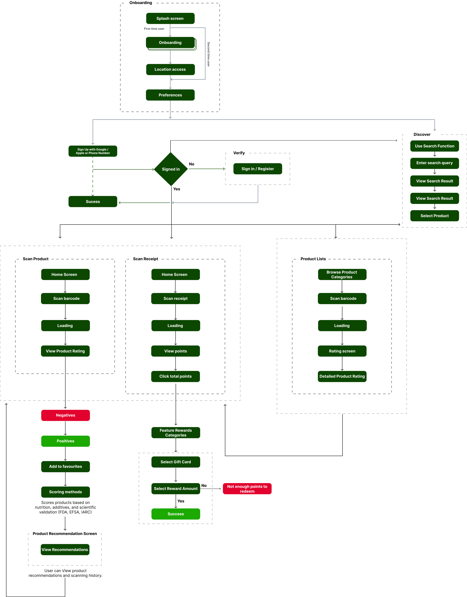
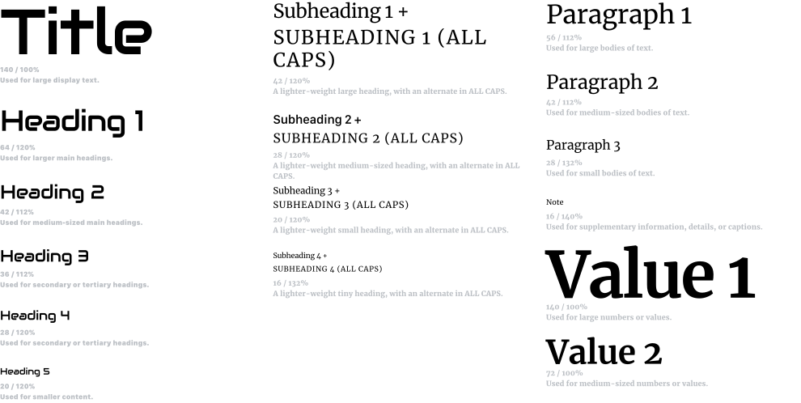
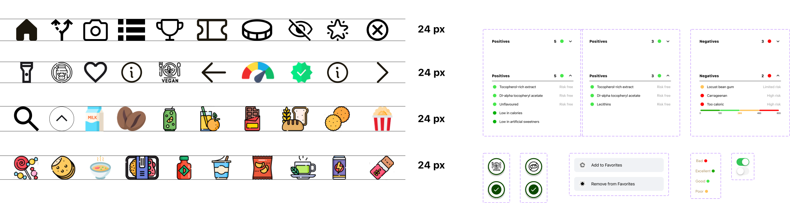

Orbit Scan: A Mobile App to Decode Nutrition Labels for Everyday Shoppers
Touro University (Capstone Project)
Year - 2025
Overview
OrbitScan is a mobile app designed to help users make smarter, healthier food choices by scanning product barcodes to reveal nutritional insights, ingredient breakdowns, and health scores. This capstone project was created to address the common frustration of decoding complex food labels—especially for busy, health-conscious shoppers
Through extensive user research, the app was designed with real-life scenarios in mind, offering a clear, personalized alternative to overwhelming product information. The goal was to transform the grocery shopping experience into an informed, efficient, and empowering process for users.
The Problem
Ever stood in a grocery aisle, feeling overwhelmed by:
OrbitScan was created to solve this problem by:
Outcome: Users can shop smarter, make healthier decisions, and feel confident about what they bring home.
Design Process
User Research:
Design & Prototyping:
Testing & Iteration:

User Research
PROJECT GOAL
The goal of this project was to design a mobile application that simplifies the process of understanding food products by enabling users to scan barcodes and receive clear, actionable nutritional insights. The design needed to streamline the user flow from scanning to decision-making, present complex ingredient information in an intuitive format, and offer personalized, healthier alternatives—ultimately empowering users to make informed food choices with confidence and ease.
INTERVIEWS
Questions asked during the interview based on Shopping Behavior, Decision Confidence, Information Accessibility, and Interest in Personalisation.
Q: Tell me about the last time you used an app to help with grocery shopping or checking a product's nutrition?
Q: At what point in your shopping journey do you usually check a product’s nutritional or ingredient information?
Q: What factors are most important to you when choosing food products (e.g., price, nutrition, ingredients, brand)?
Q: How much time do you usually spend reviewing or comparing products while grocery shopping?
Q: Do you ever consult a nutritionist, doctor, or do your own online research when choosing what to buy?
Q: How confident do you feel when deciding if a product is healthy or right for you?
Q: Can you walk me through how you typically compare two products — what do you look at first?
Q: Do you find food packaging easy to understand? Why or why not?
Q: Would personalized product suggestions based on your health goals or dietary needs help you shop better?
INSIGHTS FROM USER INTERVIEWS
Decision making challenge
Users struggle to make confident decisions when purchasing food products due to unclear or overwhelming product information.
Users spend significant time researching products before buying but still feel uncertain about their choices.
Comparing products based on ingridients or nutritional value is a common practice, but users often lack tools to simplify this process.
Transparency & Trust
There is a strong demand for clearer and more transparent product information, as users feel packaging lacks sufficient details.
Users want easy access to unbiased ingrident analysis and nutritional data to make informed decisions.
Trust in product labels and marketing cliams is low, driving the need for apps that provide independent evaluations.
Personalisation & Accessibility
Users value personalized recommendations tailored to their dietary needs.
Access to tools that provide customized suggestions based on allergies is considered highly important.
Users consult healthcare providers or nutritionists for advice, indicating a gap that apps can fill by offering recommendations.
COMPETITIVE ANALYSIS

PERSONA

User Flow

Visual Identity

When designing, the goal was to create a logo that visually communicated the app’s mission helping users make healthier food choices through simple scanning. Early sketches with food and barcode imagery felt too generic and failed to capture the app’s holistic nature.
I pivoted to the concept of an “orbit” a circular symbol representing a complete, 360-degree understanding of product information paired with subtle barcode lines to reflect the scanning functionality.
TYPOGRAPHY
I chose a clean and modern font Audiowide & Merriweather that aligns with the app's minimalist design, emphasizing simplicity and clarity in the user interface.

Design System
COLOR PALETTE

COMPONENTS

Final UI Screens
ONBOARDING SCREENS
Orbit Scan's onboarding introduces the app's core functionalities across four screens. It highlights instant health insights through product scanning, identification of harmful additives, and a reward system for making smart choices, encouraging users to begin.

HOME SCREEN
The Discover home screen presents users with personalized 'Products you may like' alongside 'E Gift Vouchers'. It also features an 'Articles' section offering informative content on healthy eating, packaging swaps, gut health, and clean bread options.


SCANNER
The left screen shows the detailed health information for a product after a scan. It highlights showing both positive and negative attributes of its ingredients. The right screen shows the "Options" to "Add to Favorites" and view the "Scoring method," and offers "Recommendations" for similar products.
ADDITIVE ANALYSIS
The left screen shows the detailed health information for a product after a scan. It highlights showing both positive and negative attributes of its ingredients. The right screen shows the "Options" to "Add to Favorites" and view the "Scoring method," and offers "Recommendations" for similar products.


CATEGORIES
The List of Categories screen allows users to easily browse top food product categories, such as Milk, Coffee, Juices, and Chocolates. Each category is visually supported with intuitive icons to enhance quick recognition and ease of navigation.
The purpose of this screen is to streamline product discovery by organizing items into familiar categories, helping users quickly find and scan items of interest. This design supports faster decision-making while maintaining a clean and user-friendly browsing experience.
REWARDS
Left Screen: Users can explore featured rewards and browse categories like Retail, Health, and Fashion. This screen motivates users by showcasing a range of options they can unlock with their earned points.
Right Screen: After selecting a reward, users choose the reward amount based on their available points. A clear, simple layout helps users quickly understand the redemption process and complete their reward claim with confidence.

Result
OrbitScan resulted in a fully designed and interactive high-fidelity prototype, showcasing a seamless barcode scanning experience and personalized nutritional insights. I prepared detailed screens, user flows, and export-ready assets to guide future development efforts.
View Prototype
MORE PROJECTS
View All